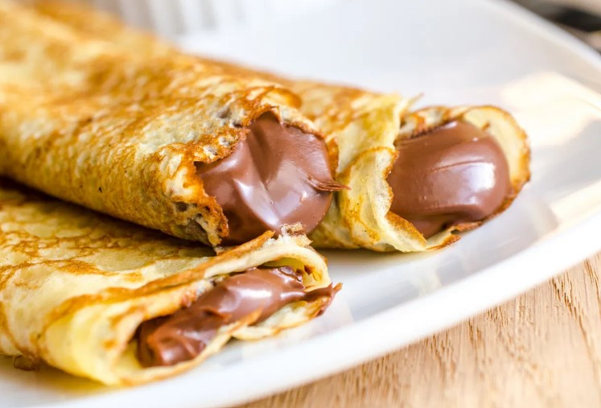

Receta de la semana
Cómo hacer los mejores panqueques: 6 Trucos!
Receta de panqueques
- Tiempo de preparción: 20 minutos
- Tiempo de cocción: 20 minutos
- Tiempo total: 40 minutos
Ingredientes 20 panqueques chicos
- 125g. de harina
- 250cc. de leche
- 2 huevos
- Pueden usar harina común 0000 o leudante, si le ponés leudante quedarán un poco más gorditos.
- leche puede ser descremada.
Como hacer los mejores panqueques paso a paso
- Poner en la licuadora los huevos, la harina y un chorrito de leche, no más. Batir, separar la mezcla de los bordes y volver a batir hasta que no queden más grumos. ¿Se pueden hacer panqueques a mano? La respuesta es obvio que si. Pero yo utilizo licuadora.
- Colocar el resto de la leche y volver a batir hasta que quede una mezcla bien lisa.
- Llevar la mezcla a la heladera por una media hora para que la harina se hidrate. Si no lo hacer no pasa nada pero mejor hacerlo.
-
Colocar una sartén o panquequera siempre a fuego mínimo. Un poco de manteca para dar sabor y que no se peguen , y echar el primer cucharón. El primer panqueque nunca queda bien, a veces se descarta.
-
De a poco ir haciendo panqueque por panqueque con paciencia, enmantecando cada tanto el fondo para dar sabor. Hay que tener cuidado de que no se caliente demasiado la sartén o panquequera (sino es difícil desparramar la mezcla), no hay que intentar despegarlos (se despegan solos cuando están cocidos) y hay que cocinarlos poco tiempo del segundo lado, así quedan tiernos.
-
Ir colocando panqueque por panqueque en un plato y tapando con un repasador para que no se sequen.
-
¿Se pueden freezar?, sí, envueltos en film, y secar unas horas antes así no se rompen al intentar despegarlos.
-
Para hacer los panqueques con dulce de leche, untar cada panqueque, hacer los rollitos como se ven en el video, doblando primero los bordes para que no se escape el dulce de leche, colocar en una fuente, espolvorear con azúcar impalpable y chocolate rallado. Llevar a microondas un minuto para calentar. Devorar, ser feliz. Después te puedes sentir un poquito culpable. Quién te quita lo bailado dicen por ahi.
Los panqueques son un clásico en Argentina, al igual que el dulce de leche. Quizás éste último es un poco más difícil de conseguir dependiendo de donde nos encontremos, pero ahora no tienen excusas para animarse a cocinar panqueques caseros!